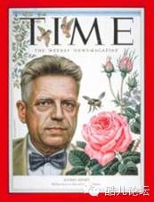
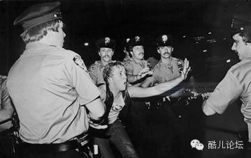
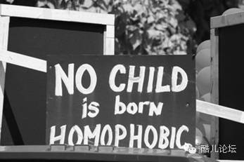
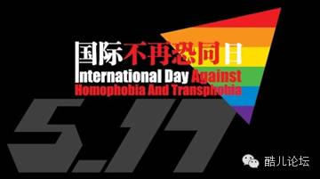
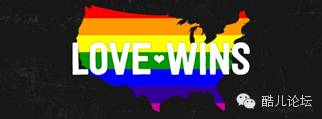
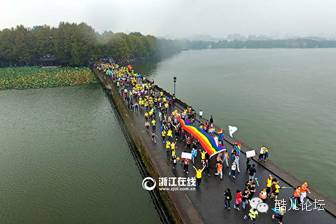

志愿者|访谈

他的《人类男性性行为》却已经向世界发出一个惊人的论断
同性恋者占总人口的10%左右。

人们还在漠视警察以“流浪者”和“犯罪者”的名义抓捕同性恋时
他们选择走出石墙酒吧，不再沉默，要让世界听见这个群体的声音：
Out, loud and proud！

在同志平权运动不断兴起的时候，有的人仍固执地坚持“恐同”。

而有的人却开始庆祝“国际不再恐同日”，因为世卫组织早已于1990年5月17日：
正式将“同性恋”去病理化

我们无法马上改变那些根深蒂固于人们心中的偏见和刻板印象，
但我们相信每个人都可以做出最符合“良心”的判断
我们承认这个群体中的种种灰暗，因为这是社会常态，
但我们也期待可以让人们了解到更多我们的故事，看到我们的坚持
很高兴，我们不是独自在战斗：

我们正在见证世界各地，越来越多的国家为我们发声
而我们的身边也同样有这样的一群人在为LGBT群体贡献自己力量
当你还在犹豫是否要为这个群体勇敢发声的时候，他们
——酷儿论坛的志愿者早已开始为改变做出行动！
也许，你需要一些激励？
也许，你想要了解更多？
也许，你希望听到他们的故事…
敬请关注明日推送，听听老志愿者怎么说：
酷儿论坛现任站长
Owen的心 ba 路 gua 历 fang 程 tan